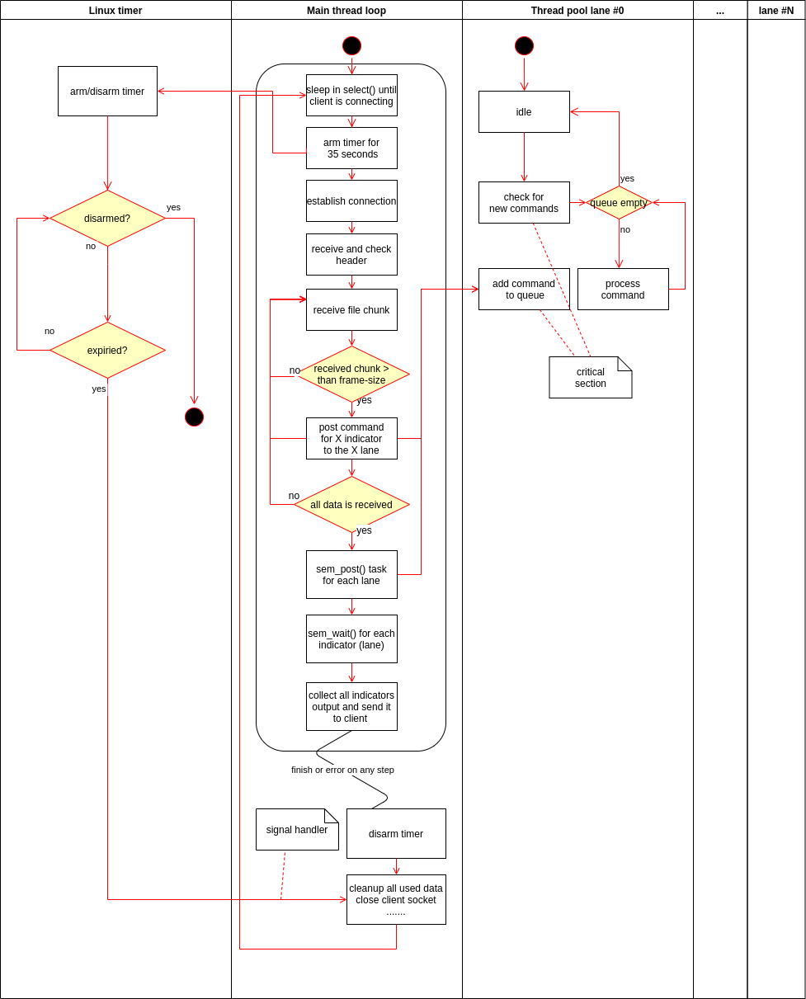

This is a computation server for dash cam footage. It calculates indicators metrics from received file and send results back.
In the project root:
mkdir build
cd build
cmake ../
makeAfter project built, in the build directory:
make testFrom the build directory:
./computation-serverIf you want to use your own library:
LD_PRELOAD=<PATH_TO_YOUR_LIB> ./computation-serveror
LD_LIBRARY_PATH=<PATH_TO_DIR_WITH_LIB> ./build/server$ ./computation-server --help
Usage: computation-server [OPTION...]
This is a computation server which receives video files fromdash cams,
calculating a number of computation-intensive driver behaviour indicators, and
sending these back to the vehicle in the same connection
-d, --daemonize Run as a daemon
-i, --ip=address Server ip address (default: localhost)
-p, --port=port Server TCP port (default: 5000)
-q, --quiet Print only error messages
-V, --verbose Print debug messages
-?, --help Give this help list
--usage Give a short usage message
--version Print program version
Mandatory or optional arguments to long options are also mandatory or optional
for any corresponding short options.
Report bugs to <alexeyfonlapshin@gmail.com>.
If you want to simulate dash cam client use command from build dir:
./tests/dash_cam -s 80000000 -f 1000 | pv -L 2621440 | nc -q 2 localhost 5000 | ./tests/dash_cam -rpv argument.
The design is very simple. It is main thread which operates with server socket able to establish one IPv4 TCP connection per session. And X thread workers for indicators calculation, where X number of indicators from the library. After all initializations, in the loop we have simple steps:
If Timer expires while processing video file, or any error appears - all progress will dismiss and program will go to the second step

There are two types of messages: message from dash cam with video file inside AND message for dash cam with calculated metrics inside
Both messages used the same header which declared in include/dash_cam.h
Alexey Lapshin